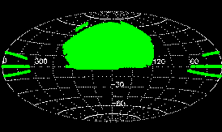
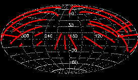

The Sloan Digital Sky Survey (see www.sdss.org for general information) mapped one quarter of the entire sky and performed a redshift survey of galaxies, quasars and stars. Data Release 7 (DR7) is the seventh major data release and provides images, imaging
catalogs, spectra, and redshifts for download. It is the final data release of SDSS-II, an extension of the original SDSS consisting of three subprojects: The Legacy Survey, SEGUE and
a Supernova survey.
About DR7 explains what is new in DR7, and lists remaining or new caveats and subtleties in the data.
This site is designed primarily to provide access to Data Release 7 for professional astronomers. Members of the public, including educators, can explore DR7 by starting at the SkyServer website.
Please refer to the credits
page for our sources of funding, participating institutions, and
how to acknowledge the use of SDSS data in your publications. Please
also note how to refer to SDSS sources in your publications using the
proper IAU nomenclature for SDSS
sources.
The Sloan Digital Sky Survey is continuing through the Third Sloan Digital Sky Survey (SDSS-III). More information on that survey is available at www.sdss3.org. SDSS-III has completed its two subsequent data releases, Data Release 9, and Data Release 8 (DR8).
Data access
The data products page
describes which data SDSS produces. Fits images, spectra and catalog
tables are served by the Data Archive
Server (DAS). You can also search and brows all catalogs and jpeg
images through the Catalog
Archive Server (CAS) database. For an overview of the various
search forms, see the data access
page.
Imaging
| Footprint area |
|
| Imaging total area in DAS (multiple scans counted multiple times) |
45,000 sq. deg. (1.3 million frames/filter) |
| Imaging catalog |
357 million unique objects (SEGUE: 127 million, Legacy: 230 million) |
| Data volume |
| images (fits) | 15.7 TB |
| other data products (catalogs, masks, jpeg images, etc.) (DAS, fits format) | 26.8 TB |
| catalogs (CAS, SQL database) | 18 TB |
|
Average wavelengths and magnitude limits
(95% detection repeatability for point sources) |
| u |
g |
r |
i |
z |
| 3551Å |
4686Å |
6165Å |
7481Å |
8931Å |
| 22.0 |
22.2 |
22.2 |
21.3 |
20.5 |
|
| PSF width |
1.4" median in r |
| Pixel size |
0.396" |
| Exposure time for each pixel |
53.9 s |
| Photometric calibration |
Target
| r |
u-g |
g-r |
r-i |
i-z |
| 2% |
3% |
2% |
2% |
3% |
|
Ubercal
| r |
u-g |
g-r |
r-i |
i-z |
| 1% |
2.2% |
1.5% |
1.5% |
1.5% |
|
|
| Astrometry |
< 0.1" rms absolute per coordinate |
Spectroscopy
| Spectroscopic area |
| Total |
9380 sq. deg. |
| Legacy |
8032 sq. deg. |
| SEGUE |
1348 sq. deg. |
|
| Wavelength coverage |
3800-9200Å |
| Resolution |
1800-2200 |
| Signal-to-noise |
>4 per pixel at g=20.2 |
| Redshift accuracy |
30 km/sec rms for main galaxy sample (from repeat observations) |
| RV accuracy (systematics, for stars) |
1.8 km/s systematics (SEGUE plate-to-plate wavelength solutions) |
| RV accuracy (total errors, for stars S/N per pixel = 27) |
5.5 km/s rms (SEGUE matched plate comparisons, near g=18th mag) |
| Target magnitude limits for main samples |
Galaxies: Petrosian r <17.77
Quasars: PSF i <19.1 (20.2 for objects likely
at z>2.3) |
| Spectroscopic catalog |
| Class |
N(total) |
N(main) |
N(SEGUE) |
| All |
1,640,960 |
1,374,080 |
266,880 |
| Galaxies |
929,555 |
928,567 |
988 |
| Quasars (z <2.3) |
104,740 |
103,121 |
1,619 |
| Quasars (z ≥2.3) |
16,633 |
15,411 |
1,222 |
| M stars and later |
84,047 |
76,125 |
7,922 |
| Other stars |
380,214 |
150,748 |
229,466 |
| Sky spectra |
97,398 |
75,209 |
22,189 |
| Unknown |
28,383 |
24,767 |
3,616 |
640 spectra are observed simultaneously on one
plate. There are:
- 1802 Legacy ("main-survey") plates,
-
- 86 repeat observations ("extra plates") of 77 distinct
Legacy plates,
- 676 observations of 660 distinct special plates, including
- 410 observations of 212 distinct special plates
taken under SEGUE.
|
| Data volume |
| exposures and calibrated spectra ("2d") | 3.3 TB |
| spectra, redshifts, line measurements ("1d") | 450 GB |
|
Previous data releases
For reference, we provide links to earlier data releases. The
current data release always provides both the largest sky coverage and
the highest-quality data and reductions.
Funding for the SDSS and SDSS-II was provided by the Alfred P. Sloan Foundation, the
Participating Institutions, the National Science Foundation, the U.S. Department of Energy,
the National Aeronautics and Space Administration, the Japanese Monbukagakusho, the Max Planck
Society, and the Higher Education Funding Council for England. The SDSS was managed by the
Astrophysical Research Consortium for the Participating Institutions.
This is version $Name: $.
This page was last modified on $Date: 2013/08/01 16:55:35 $ (UT).

| News
DR10, the current data release from
SDSS-III, is released July 30, 2013!
DR9, from
SDSS-III, is released Aug 1, 2012!
DR8, the first data release from
SDSS-III, is available.
A new release of the Quasar Catalog complete through DR7 is now
available
SDSS Mirror sites to bookmark are listed here
A paper describing the SEGUE survey is available.
A paper describing DR7 is available.
More details...
|

| Legacy DR7
Imaging Sky Coverage (Aitoff
projection of Equatorial
coordinates) |

| Legacy DR7 Spectral Sky Coverage (Aitoff
projection of Equatorial
coordinates) |

| SEGUE DR7
Imaging Sky Coverage (Aitoff
projection of Equatorial
coordinates) |

| SEGUE DR7 Spectral Sky Coverage (Aitoff
projection of Equatorial
coordinates) |
|
|
|
|
|


{kind=link}
{kind=link}